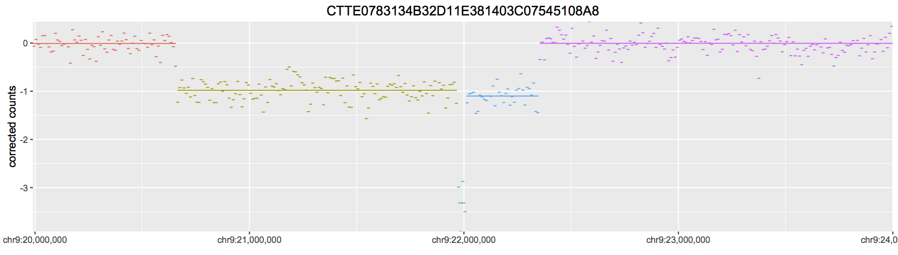

Introduction to the MCNV Package
Prerequisites
Before using the MCNV software, there are some things you need:
- An understanding of R and Bioconductor;
- A working copy of both R and Bioconductor;
- Access to the MCNV data on xserve (at
GED/GED-MCNV).
Installation
Before you can use the MCNV package, it must be installed. MCNV depends on several other packages, so you need to install them first. You also need to get a copy of the MCNV package. These are stored in the GED-MCNV/package folder. Get a local copy of the laters version, which will be named mcnv_1.5-18.tar.gz (for version 1.5-18). Do not uncompress the file; keep it as a compressed archive. Note that many web browsers will attempt to "open" known file types, and might decompress the file. Once you have a local copy of the MCNV package in the current directory, you can install it:
source("https://bioconductor.org/biocLite.R")
biocLite(c("GenomicRanges", "DNAcopy", "ggplot2", "SummarizedExperiment", "S4Vectors", "GenomeInfoDb", "parallel", "GenomeInfoDb"))
install.packages('./mcnv_1.5-18.tar.gz', repos=NULL)Testing
You can test if the MCNV package is correctly installed by:
library(mcnv)
data(counts)
data(segments)
p <- plotMCNVSample(counts, segments=segments, sample="CTTE0783134B32D11E381403C07545108A8")
plot(p)The results should look like this:

If you do not get an output plot that looks like the above, check the error messages that R has returned.
Window Counts
The basic data object used for the MCNV is the mcnvWindowCounts object. This is based upon the SummarizedExperiment class. This object holds data for each window for multiple samples. Each row in the dataset corresponds to a single window, and each column a single sample.
The counts dataset which is included in the MCNV pakage is an example of the mcnvWindowCounts object. Load it as:
data(counts)Windows
The windows contained within the counts object can be extracted using the windows() function. Look at GenomicRanges documentation for the underlying GRanges class. The resulting window object can be treated as a data.frame, but has many useful features. Most usefully, you can get intersections between a genomic range and a set of windows using subsetByOverlaps:
data(counts)
w <- windows(counts) # Extract the windows
length(w) # How many windows are there?
range(w) # The complete range covered by the windows
seqnames(w) # The sequence names (i.e. the chromosomes)
start(w) # The start positions of the windows
end(w) # The end positions
# Subset the windows by a range:
data(genome)
r <- intervalRange("chr9:21000000-22000000", genome=genome)
subsetByOverlaps(w, r)Note that you don't need to extract the windows from counts in order to do this subsetting:
data(counts)
data(genome)
r <- intervalRange("chr9:21000000-22000000", genome=genome)
subsetCounts(counts, r)Each window contains multiple values, including the type, mappability, and the number of A, C, G, T and N bases. You can extract these as a DataFrame using rowData(counts).
Samples
The sample data contined in the counts object can be accessed as colData(counts). The returned object is a DataFrame continaing the sample metadata:
data(counts)
d <- colData(counts)
d
d$group
d$flowcellSample Data
The counts object contains multiple datasets, for each sample and each window. You can see which datasets are included using assays(counts). The datasets are:
-
rawCountscontaining the raw read counts per window; -
correctedCountscontaining the corrected log read counts per window; and -
smoothedCOuntscontaining the smoothed corrected counts per window (Don't use these).
You can extract these easily:
data(counts)
r <- rawCounts(counts)
d <- correctedCounts(counts)Segments
Corrected data contained within the counts object are stored as a GRangesList. See the GenomicRanges documentation for more information. Each sample is stored as a separate GRanges dataset, as segments are in different locations per sample, so can't be made into regular matrix-like objects.
Subsetting a single GRanges object is as described for windows, but to subset the whole of a segments dataset, you can use the subsetSegments() function:
data(segments)
data(genome)
r <- intervalRange("chr9:21000000-22000000", genome=genome)
subsetSegments(segments, r)Plotting
The base plotting function is plotMCNVSample. This function produces an individual plot for a single sample:
data(counts)
data(segments)
data(genome)
r <- intervalRange("chr9:21000000-24000000", genome=genome)
p <- plotMCNVSample(counts, segments=segments, sample="CTTE0783134B32D11E381403C07545108A8", region=r)
plot(p)Multiple options can be specified, including background annotations. For example, to include the position of CDKN2A as a coloured bar behind the points, the following code can be used:
# Build the annotation for CDKN2A & CDKN2B:
annot <- intervalRange(c("chr9:21966929-21967751", "chr9:22002903-22009313"), genome=genome)
annot$colour <- NA # Don't show a rectangle round the box
annot$fill <- c("navy", "orange") # The colours for the annotation boxes
annot$alpha <- 0.001 # Make the boxes transparent
# Plot the data:
region <- intervalRange("chr9:21900000-22100000", genome=genome)
p <- plotMCNVSample(counts, segments=segments, sample="CTTE0783134B32D11E381403C07545108A8", annotation=annot, region=region, segment.colour='black')
plot(p)The counts and segments objects only show data for the 4Mb CDKN2A region. The complete data are in the GED/GED-MCNV/data/corrected/ and GED/GED-MCNV/data/segmented/ folders. You can load these directly into R using load(). After this, whole genome plots are simple:
# Load the 10 data (NB: You'll need the correct path here):
load('GED-MCNV/data/corrected/counts-10k.RData')
load('GED-MCNV/data/segmented/segments-10k.RData')
# Plot the complete genome for one sample:
p <- plotMCNVSample(counts10k, segments=segments10k.corrected, sample="CTTE0783134B32D11E381403C07545108A8", segment.colour="black")
plot(p)
# Plot just chromosome 9:
p <- plotMCNVSample(counts10k, segments=segments10k.corrected, sample="CTTE0783134B32D11E381403C07545108A8", segment.colour="black", region=intervalRange("chr9", genome=genome))
plot(p)